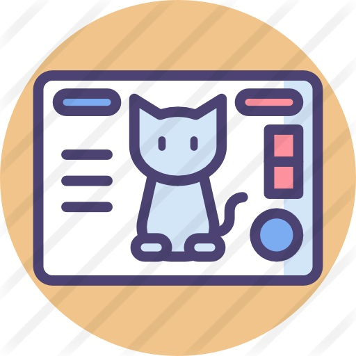

Virtual Pet Shelter
Meant to emulate Tamagachis, this group project demonstrates the use of classes and lists to manage and interact with multiple items at once.
When I started college my first semster of engineering was primarily coding, and I had to apply that knowledge in a group project in the second semester. I found that I really enjoyed coding, and when engineering didn't work out and I entered the workforce that stuck with me. As a machinist I was asked to take over programing the robotic arms they used to load and unload machines, and it finally occured to me that I could make a career out of this. I consulted with friends that had gone through coding bootcamps and entered the field, and once I had saved up enough to make the switch I started at We Can Code it.
My skills include:
Meant to emulate Tamagachis, this group project demonstrates the use of classes and lists to manage and interact with multiple items at once.
Based on a "Class of Choice" assignment, this project demonstrates the use of methods to let you run a small bike rental shop.
A class assignment from We Can Code IT, this code demonstrates Test Driven Development, but does nothing when run.
Please feel free to reach out to me via any of the methods below.